Basic Neuron Structure
Neurons are the cells the nervous system uses to send information around the body. Each one has a few key parts: the cell body (soma) is where the nucleus lives and where the cell does its basic maintenance. Branching out from the soma are dendrites, which receive incoming signals from other neurons. On the other side is the axon, a long fiber that carries the signal away from the cell body toward the next neuron or target tissue.
Many axons are wrapped in a fatty coating called the myelin sheath, made up of Schwann cells. Myelin acts like insulation on a wire and speeds up signal transmission dramatically. Gaps between the myelin segments are called nodes of Ranvier, where the electrical signal jumps from node to node rather than traveling continuously along the full length of the axon.
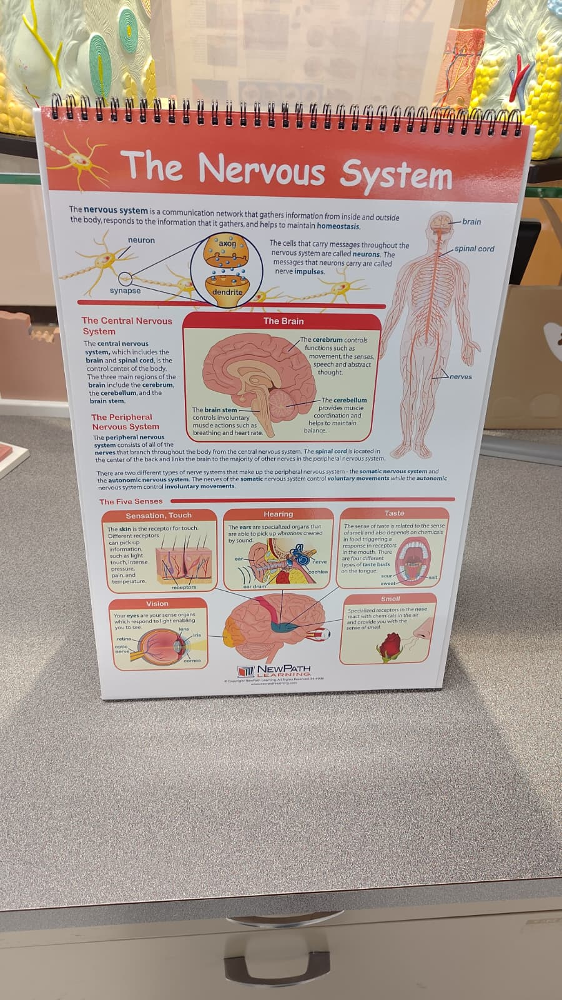
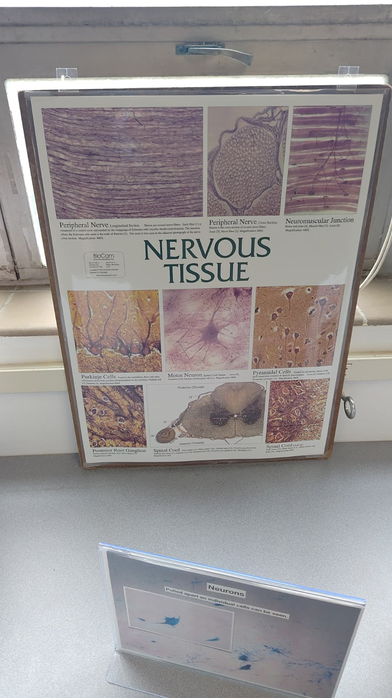
How Neurons Connect
Neurons do not actually touch each other. They communicate across a tiny gap called a synapse. When an electrical signal (called an action potential) travels down the axon and reaches the axon terminal, it triggers the release of neurotransmitters stored in small bubbles called vesicles. These neurotransmitters float across the synaptic gap and bind to receptors on the next neuron, passing the signal along.
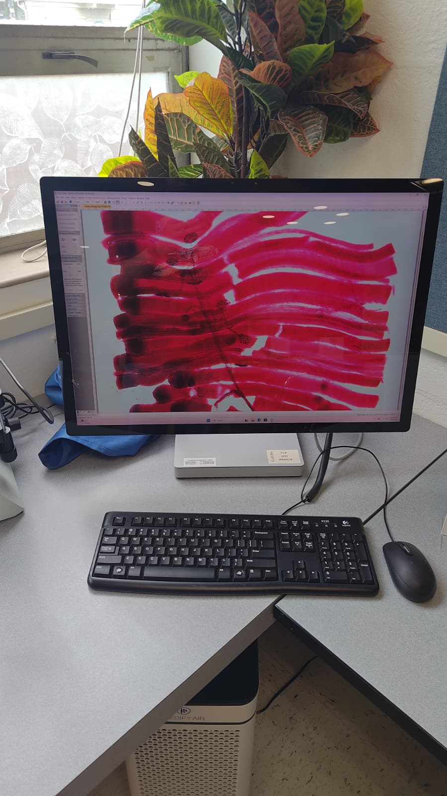
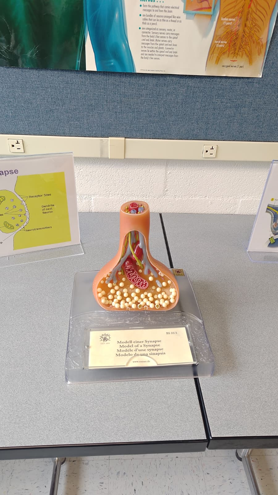
Factors That Can Impact Axons and Synapses
- Myelin damage: In diseases like multiple sclerosis (MS), the immune system attacks the myelin sheath. Without proper insulation, signals slow down, misfire, or fail to reach their destination entirely.
- Neurotransmitter imbalances: Too much or too little of a given neurotransmitter can have big effects. Low dopamine is tied to Parkinson's disease, and imbalances in serotonin and norepinephrine are linked to depression and anxiety.
- Drugs and toxins: Many substances work by mimicking, blocking, or flooding neurotransmitter systems at the synapse, hijacking normal signaling.
- Sleep and nutrition: The brain forms and maintains synaptic connections most actively during sleep. Poor nutrition (especially lack of omega-3 fatty acids and B vitamins) can slow the growth and repair of myelin.
Neural Circuit in Action
A neural circuit is a group of neurons that work together to process information and produce a response. One of the clearest examples is the reflex arc, which shows how the nervous system can respond to a stimulus without waiting for the brain to be involved.
The Withdrawal Reflex
When a hand gets close to something dangerously hot, a reflex kicks in before conscious thought has a chance to process what is happening. Here is the sequence:
- Stimulus: Heat and pain receptors in the skin detect the danger.
- Sensory neuron: A signal travels up a sensory neuron toward the spinal cord.
- Integration: Inside the spinal cord, an interneuron receives the signal and immediately passes it along to the motor side.
- Motor neuron: A motor neuron carries the response signal back out to the arm and hand muscles.
- Response: The muscles contract and the hand pulls away from the flame.
All of this happens before the signal has even reached the brain to be consciously felt as pain. You pull back first, and then register that it hurt. The brain receives the information a moment later as a kind of after-the-fact report.
Reflex vs. Voluntary Response
A reflex is different from a voluntary action because it bypasses the brain's decision-making centers entirely. Voluntary movements originate in the motor cortex and travel down to the muscles. Reflexes are processed in the spinal cord, which makes them much faster but less flexible. There is no deliberating, just a hardwired response.
Lobes of the Cerebral Cortex
The cerebrum is the largest part of the brain and is divided into four main lobes. They do not work in complete isolation since most tasks involve multiple lobes talking to each other, but each has a primary specialty.
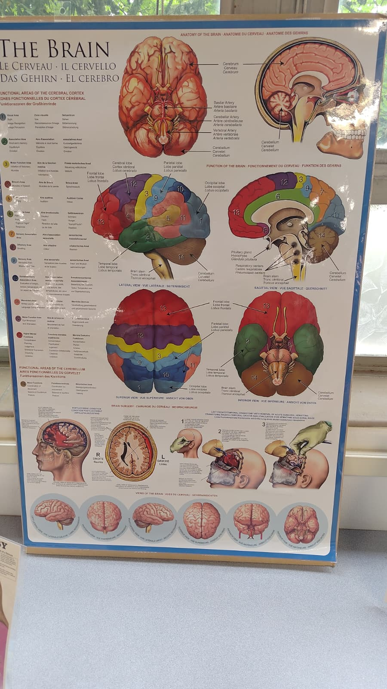
| Lobe | Location | Primary Roles |
|---|---|---|
| Frontal | Front of the brain, behind the forehead | Voluntary movement, planning, decision-making, personality, and speech production (Broca's area) |
| Parietal | Top and back, behind the frontal lobe | Processing sensory input from the body (touch, pressure, pain, temperature), spatial awareness, and reading |
| Temporal | Sides of the brain, near the ears | Hearing, language comprehension (Wernicke's area), memory formation, and recognizing faces |
| Occipital | Back of the brain | Visual processing, interpreting the signals coming in from the eyes |
Brain Disorders
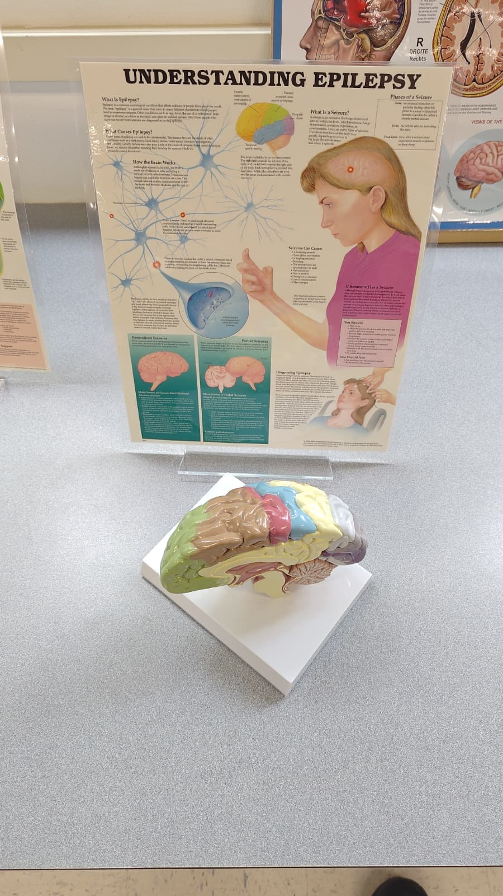
Epilepsy
What it is: Epilepsy is a neurological disorder where groups of neurons experience sudden, abnormal bursts of electrical activity. This disrupts normal brain function and can cause seizures.
Altered function: Seizures look very different depending on which part of the brain is affected. They can range from brief lapses in awareness (absence seizures) to full-body convulsions. After a seizure, the brain often enters a recovery period of confusion or fatigue.
Causes: Sometimes there is a structural cause like scarring or a tumor, other times no clear cause is found. Common triggers include flashing lights, stress, or sleep deprivation.
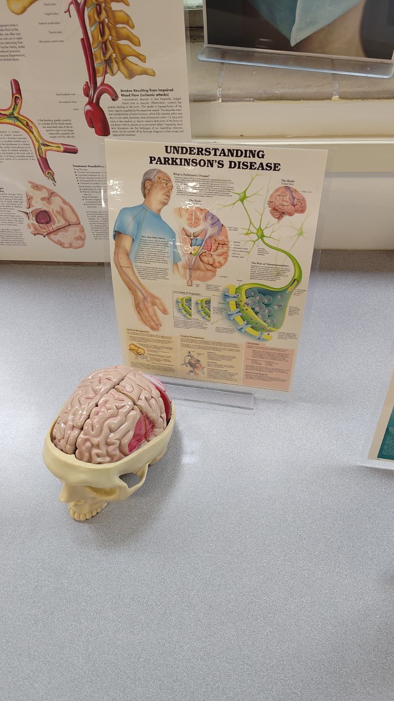
Parkinson's Disease
What it is: Parkinson's is a progressive neurodegenerative disease caused by the gradual death of dopamine-producing neurons in a brain region called the substantia nigra.
Altered function: Dopamine is essential for smooth, coordinated movement. As levels drop, communication in the motor pathways breaks down. The classic symptoms are a resting tremor, muscle stiffness, and slowed movement. Balance and walking are also affected over time.
Treatment: There is no cure yet. The drug levodopa helps replenish dopamine levels and manage symptoms, but it does not stop the underlying cell death from progressing.
Perception and Vision
Perception is how the brain interprets and makes sense of sensory information. It is not the same as sensation. Sensation is the raw signal coming in from a receptor. Perception is the brain's construction of what that signal means, shaped by past experience, context, and expectation.
Vision makes this easy to trace. Here is what actually happens when you look at something:
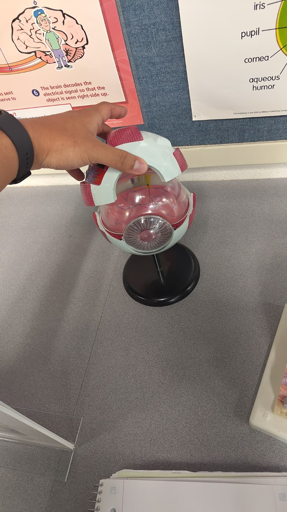
- Light enters the eye and passes through the cornea and lens, which focus it onto the back of the eye.
- The retina receives the image, projected upside down. Rod and cone photoreceptors convert light intensity and color into electrical signals.
- The optic nerve carries those signals to the brain. The two eyes' signals partially cross at the optic chiasm, so each hemisphere of the brain receives input from both eyes.
- The visual cortex (occipital lobe) processes the raw signals. The brain flips the image right-side up, fills in the blind spot, corrects for color constancy, and interprets edges, depth, and motion.
The key takeaway is that what you experience visually is not a direct recording of reality. It is the brain's best interpretation of the incoming data. That interpretation is why context, lighting, and expectations can genuinely change what you think you see.
Illusions and Misperception
Illusions happen when the brain's interpretation of sensory input does not match physical reality. They are not exactly errors. They reveal the shortcuts and assumptions the brain makes to process information quickly. When those assumptions are deliberately manipulated, the result is a misperception.
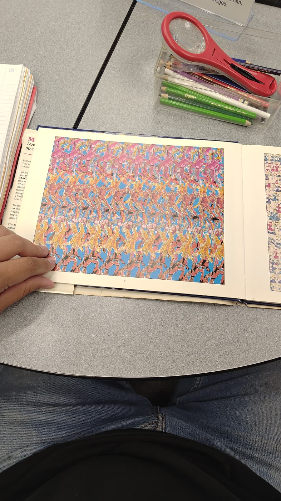
How Stereograms Work
The book we looked at in lab was a Magic Eye autostereogram. These images exploit how the brain uses binocular disparity to perceive depth. Normally each eye sees a slightly different version of the same scene because they are a few inches apart. The brain compares the two views and uses the difference to calculate how far away things are.
A stereogram is designed so that when you relax your focus and let your eyes aim slightly behind the page, the repeating pattern looks different to each eye. The brain detects what seems like a real disparity and interprets it as depth, pulling a 3D image out of a flat surface. Nothing in the physical image is actually 3D at all.
It genuinely felt like you could step into the page. That is the brain fully committing to its depth interpretation. Once you stop trying to focus normally and let the visual system settle into the illusion, the effect becomes really convincing. It is a good reminder that what you experience visually is a brain construction, not a direct feed from the eyes.
Scent and Memory
In lab we were given three unlabeled scent vials and asked to rate how pleasant each smelled and guess what the scent was. All three guesses turned out to be driven more by personal memory associations than by any direct identification of the smell itself.
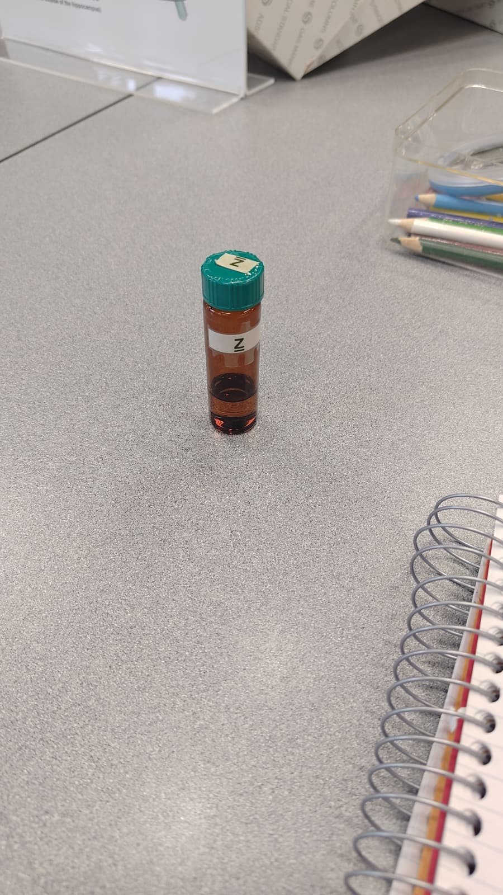
Tube Z
Actual: Apple
Guessed: Cherry
The smell was sweet and fruity, and cherry was the first thing that came to mind. Probably because the sweetness had a slight sharpness to it that I associate with cherry-flavored things. Not totally off since both are fruits, but the specific memory link pulled it toward cherry instead of apple.
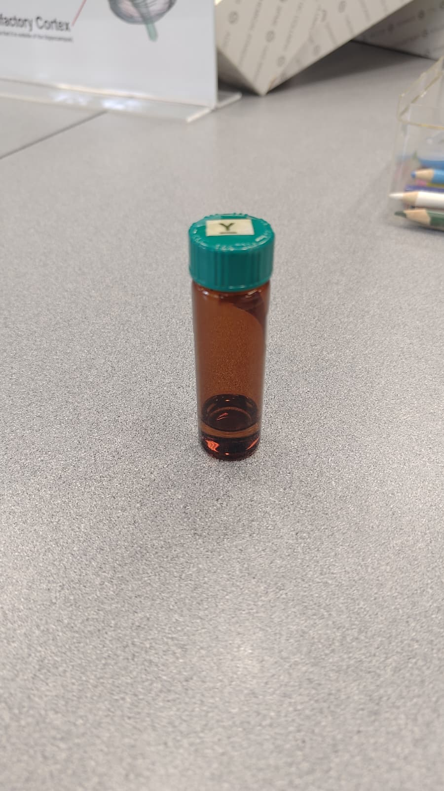
Tube Y
Actual: Mushroom
Guessed: Flowers
This one was interesting. The smell made me think of my grandma, and because she liked flowers I went with flowers. But she also cooked a lot with mushrooms. The scent triggered a memory of her, and then I reached for what I consciously associated with her rather than what the smell itself was actually pointing to. The link was there, just routed through a different association.
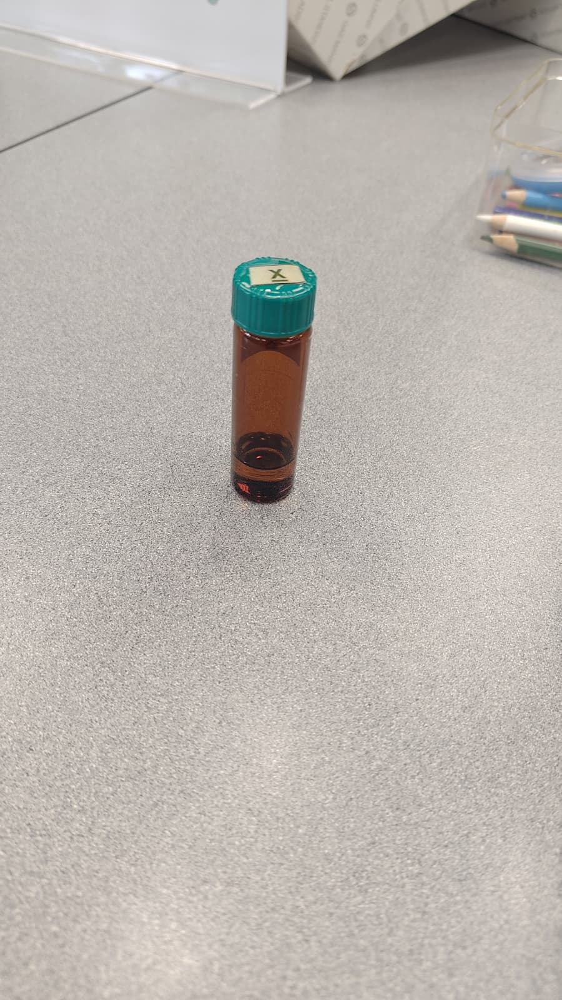
Tube X
Actual: Pineapple
Guessed: Generic soda
This one smelled sweet and a little tropical, but nothing specific clicked. I landed on generic soda, probably because the sweetness reminded me of a fruit-flavored drink rather than a real fruit. Pineapple is a fair answer though since there is a similar quality in a lot of tropical sodas.
Why Smell and Memory Are So Closely Linked
Smell is the only sense that routes directly to the amygdala (emotion processing) and hippocampus (memory storage) without first passing through the thalamus. Every other sense gets filtered there first. That direct connection is why a smell can trigger a vivid memory or strong emotional response almost instantly, before you have even consciously identified what you are smelling.
All three guesses were driven by memory first and the smell second. After being told the correct answers and going back to smell them again, you can actually find the real scent in them. The label changes what the brain focuses on, which is itself a demonstration of how much perception is shaped by context and expectation.
| Tube | Actual Scent | My Guess | Memory Trigger | Result |
|---|---|---|---|---|
| Z | Apple | Cherry | Sweet, slightly sharp fruitiness | Wrong, but same fruit category |
| Y | Mushroom | Flowers | Reminded me of my grandma | Wrong, but the memory link worked both ways |
| X | Pineapple | Generic soda | Artificial tropical sweetness | Wrong, but a real association |